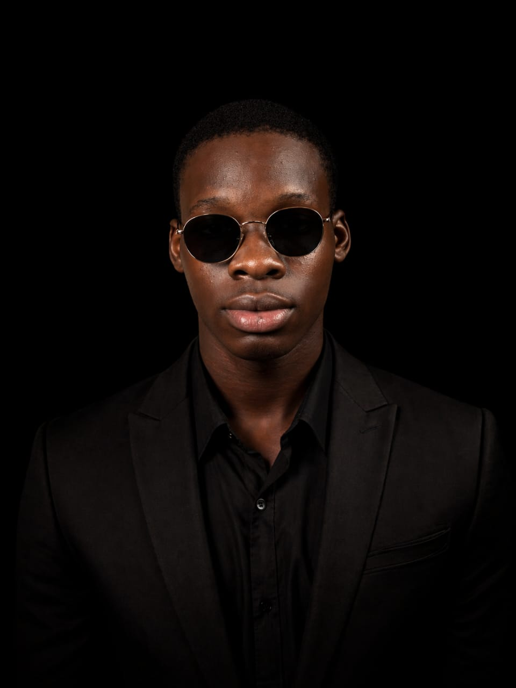

👋Hello, i'm
Samuel O.
Ayemoni
Computer Science Student.
I am a Computer Science student passionate about web development and software engineering. I enjoy building responsive websites, learning modern technologies, and creating digital solutions that solve real-world problems.

Welcome to my Academic Portfolio
I'm an aspiring technology professional with a strong passion for software development, web technologies, and continuous innovation. I enjoy transforming ideas into functional digital solutions through clean, responsive, and user-friendly web applications. As I continue to expand my knowledge in programming and modern technologies, I remain committed to developing practical skills, embracing lifelong learning, and building projects that create meaningful impact in today's digital world.